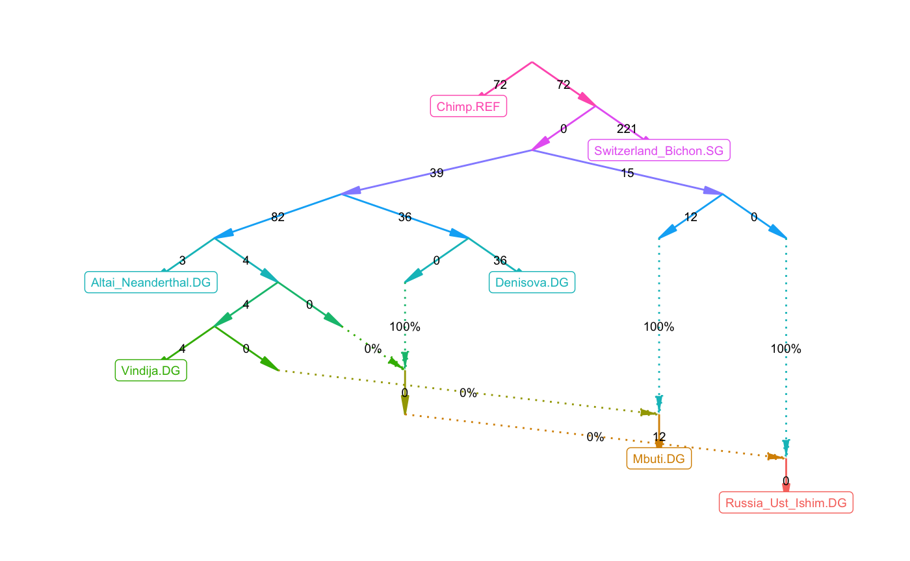
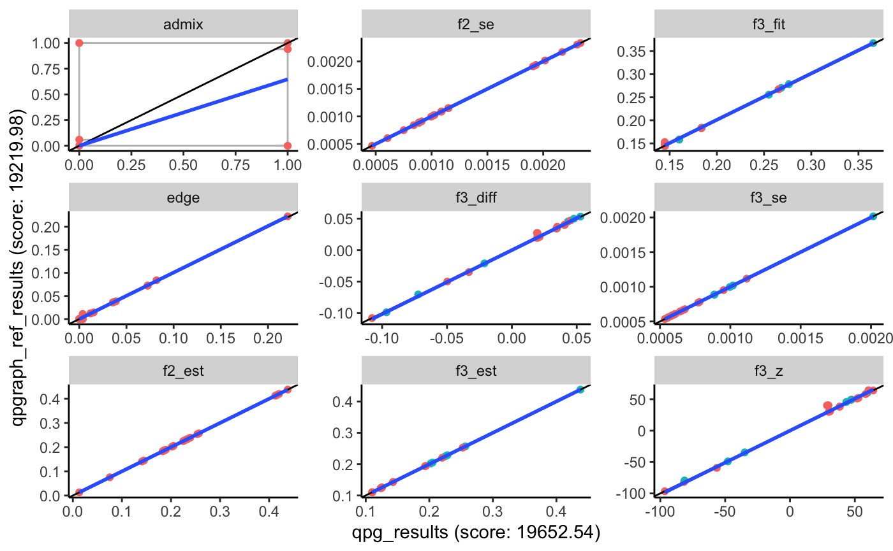
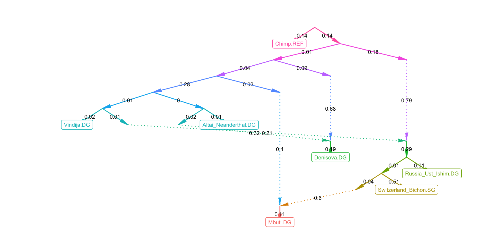
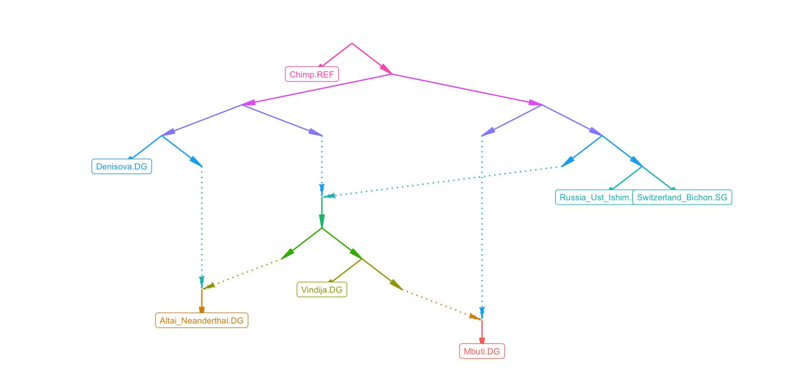

admixtools.RmdThis tutorial gives an overview of the basic workflow for computing f-statistics, and using qpWave, qpAdm, and qpGraph. Documentation for each ADMIXTOOLS function can be found under Reference, and more detailed information about specific topics under Articles.
Admixtools is a set of programs used to infer population histories from f-statistics computed from genetic data. ADMIXTOOLS 2 divides the computation into two steps: 1. Computing f2-statistics and storing them on disk This can be slow since it accesses the genotype data 2. Using f2-statistics to fit models This is fast because f2-statistics are very compact compared to genotype data
ADMIXTOOLS 2 can either be run through the R command line, or through a browser application that can be launched like this:
The documentation of the browser application can be accessed through the ? in the upper right corner of the application window. This website documents the R command line interface.
For the examples below the following R packages need to be loaded.
\(f_2\), \(f_3\), and \(f_4\) describe how populations are related to one another, and they form the basis of ADMIXTOOLS. Here we briefly describe what they are and how to compute them. Two excellent papers on f-statistics can be found here and here.
\(f_2\) is the expected squared difference in allele frequencies between two populations \(A\) and \(B\). (Allele frequencies are denoted in lower case letters here.) We can estimate it by averaging over \(n\) SNPs: \[f_2(A,B) = \frac{1}{n} \sum_{j=1}^n(a_{j} - b_{j})^2\]
\(f_4\) is the covariance of allele frequency differences between two pairs of populations, and at the same time the sum of four f2-statistics: \[ \begin{equation} \begin{aligned} f_4(A, B; C, D) &= \frac{1}{n}\sum_{j=1}^n(a_{j} - b_{j})(c_{j} - d_{j}) \\ &= \frac{1}{2}(f_2(A, D) + f_2(B, C) - f_2(A, C) - f_2(B, D) ) \label{eq:f42} \end{aligned} \end{equation} \]
\(f_3\) is the covariance of allele frequency differences between two pairs of populations where one population is the same on both sides. \(f_3\) is thus a special case of \(f_4\), and can also be written as a sum of \(f_2\).
\[ \begin{aligned} f_3(A; B, C) &= f_4(A, B; A, C) \\ &= \frac{1}{2} (f_2(A, B) + f_2(A, C) - f_2(B, C)) \end{aligned} \]
In practice, the estimation of f-statistics can be more complicated, as it needs to account for low sample counts, missing data, and differences in ploidy, as described here.
In ADMIXTOOLS 2, extracting f2-statistics from genotype data is the foundation for all further analyses:
This will look for genotype files in packedancestrymap or PLINK format, compute allele frequencies and blocked f2 statistics for all pairs of populations defined in the .ind or .fam file, and write them to my_f2_dir. It is also possible to extract only a subset of the samples or populations by passing IDs to the inds and pops arguments in extract_f2. To get a description of the arguemnts and to see examples of how to use it, type
Once finished, f2-statistics for the populations of interest can be loaded like this.
Or you can load only a subset of the populations:
mypops = c('Denisova.DG', 'Altai_Neanderthal.DG', 'Vindija.DG')
f2_blocks = f2_from_precomp(my_f2_dir, pops = mypops)f2_blocks is now a 3d-array with f2-statistics for each population pair (along dimensions 1 and 2) and each SNP block (along the 3rd dimension).
## [1] 7 7 708Separate estimates for each SNP block make it possible to compute jackknife or bootstrap standard errors for any f-statistic, and for any other estimated parameter.
f2_blocks can be used like this:
f2_blocks[,,1] # f2-statistics of the 1st SNP block
apply(f2_blocks, 1:2, mean) # average across all blocks
f2_blocks[pop1, pop2, ] # f2(pop1, pop2) for all blocksThe names along the 3rd dimension contain the SNP block lengths:
## [1] 424 772 795 835 574 842If you want to try any of this without extracting and loading your own f2-statistics, you can instead use example_f2_blocks which becomes available as you load admixtools.
The original ADMIXTOOLS program for computing f3-statistics is called qp3Pop. In ADMIXTOOLS 2, you can compute f3-statistics like this:
pop1 = 'Denisova.DG'
pop2 = c('Altai_Neanderthal.DG', 'Vindija.DG')
pop3 = c('Chimp.REF', 'Mbuti.DG', 'Russia_Ust_Ishim.DG')Or, equivalently
## # A tibble: 6 x 7
## pop1 pop2 pop3 est se z p
## <chr> <chr> <chr> <dbl> <dbl> <dbl> <dbl>
## 1 Denisova.DG Altai_Neanderthal.DG Chimp.REF 0.0591 5.98e-4 98.7 0
## 2 Denisova.DG Altai_Neanderthal.DG Mbuti.DG 0.0720 6.47e-4 111. 0
## 3 Denisova.DG Altai_Neanderthal.DG Russia_Ust_Ishim.… 0.0742 7.02e-4 106. 0
## 4 Denisova.DG Vindija.DG Chimp.REF 0.0594 5.92e-4 100. 0
## 5 Denisova.DG Vindija.DG Mbuti.DG 0.0724 6.34e-4 114. 0
## 6 Denisova.DG Vindija.DG Russia_Ust_Ishim.… 0.0750 6.96e-4 108. 0This will compute f3-statistics for all combinations of pop1, pop2, and pop3. Typing just f3(f2_blocks) will compute all possible combinations (which can be a large number). If only pop1 is supplied, all combinations of populations in pop1 will be computed.
The original ADMIXTOOLS program for computing f4-statistics is called qpDstat. As the name suggests, it computes D-statistics by default. To get f4-statistics instead, the f4mode argument needs to set to YES. In ADMIXTOOLS 2, almost everything starts with f2-statistics, so the qpdstat/f4 function computes f4-statistics by default.
f4(f2_blocks, pop1, pop2, pop3, pop4)
qpdstat(f2_blocks, pop1, pop2, pop3, pop4)
# two names for the same function## ℹ Getting population combinations...
## ℹ 6 population combinations found
## ℹ Loading f2 data for 12 population pairs...
## ℹ Computing f4-statistics## # A tibble: 6 x 8
## pop1 pop2 pop3 pop4 est se z p
## <chr> <chr> <chr> <chr> <dbl> <dbl> <dbl> <dbl>
## 1 Denisov… Altai_Nean… Chimp.REF Switzerlan… 1.50e-2 4.64e-4 32.3 6.06e-229
## 2 Denisov… Altai_Nean… Mbuti.DG Switzerlan… 2.03e-3 3.53e-4 5.75 8.85e- 9
## 3 Denisov… Altai_Nean… Russia_Ust… Switzerlan… -2.17e-4 3.73e-4 -0.580 5.62e- 1
## 4 Denisov… Vindija.DG Chimp.REF Switzerlan… 1.54e-2 4.78e-4 32.2 5.81e-228
## 5 Denisov… Vindija.DG Mbuti.DG Switzerlan… 2.33e-3 3.63e-4 6.42 1.40e- 10
## 6 Denisov… Vindija.DG Russia_Ust… Switzerlan… -2.40e-4 3.87e-4 -0.620 5.35e- 1The differences between f4-statistics and D-statistics are usually negligible. However, it is still possible to compute D-statistics in ADMIXTOOLS 2, by providing genotype data as the first argument, and setting f4mode = FALSE:
Computing f4- or D-statistics from genotype data directly is slower, but it has the advantage that it avoids any problems that may arise from large amounts of missing data. More on this here.
qpWave and qpAdm are two programs with diffent goals - one estimates the number of admixture events, the other admixture weights - but they perform the same computations. In ADMIXTOOLS 2, qpadm and qpwave are two names for one function. This function requires three arguments: 1. f2-statistics 2. A set of left populations 3. A set of right populations A target population, which will be modelled as a mixture of left populations, can be provided as the 4th argument.
left = c('Altai_Neanderthal.DG', 'Vindija.DG')
right = c('Chimp.REF', 'Mbuti.DG', 'Russia_Ust_Ishim.DG', 'Switzerland_Bichon.SG')
target = 'Denisova.DG'## $weights
## # A tibble: 2 x 5
## target left weight se z
## <chr> <chr> <dbl> <dbl> <dbl>
## 1 Denisova.DG Altai_Neanderthal.DG 49.6 23.3 2.13
## 2 Denisova.DG Vindija.DG -48.6 23.3 -2.08
##
## $f4
## # A tibble: 36 x 9
## pop1 pop2 pop3 pop4 est se z p weight
## <chr> <chr> <chr> <chr> <dbl> <dbl> <dbl> <dbl> <dbl>
## 1 Deniso… Altai_Nea… Chimp… Mbuti.DG 0.0129 3.64e-4 35.6 2.22e-277 49.6
## 2 Deniso… fit Chimp… Mbuti.DG 0.00693 6.60e-3 1.05 2.94e- 1 NA
## 3 Deniso… Vindija.DG Chimp… Mbuti.DG 0.0131 3.73e-4 35.0 7.55e-269 -48.6
## 4 Deniso… Altai_Nea… Chimp… Russia_U… 0.0152 4.46e-4 34.0 4.67e-254 49.6
## 5 Deniso… fit Chimp… Russia_U… -0.00642 8.03e-3 -0.800 4.23e- 1 NA
## 6 Deniso… Vindija.DG Chimp… Russia_U… 0.0156 4.53e-4 34.5 2.14e-261 -48.6
## 7 Deniso… Altai_Nea… Chimp… Switzerl… 0.0150 4.64e-4 32.3 6.06e-229 49.6
## 8 Deniso… fit Chimp… Switzerl… -0.00552 8.43e-3 -0.654 5.13e- 1 NA
## 9 Deniso… Vindija.DG Chimp… Switzerl… 0.0154 4.78e-4 32.2 5.81e-228 -48.6
## 10 Deniso… Altai_Nea… Mbuti… Chimp.REF -0.0129 3.64e-4 -35.6 2.22e-277 49.6
## # … with 26 more rows
##
## $rankdrop
## # A tibble: 2 x 7
## f4rank dof chisq p dofdiff chisqdiff p_nested
## * <int> <int> <dbl> <dbl> <int> <dbl> <dbl>
## 1 1 2 7.15 0.0280 4 1572. 0
## 2 0 6 1580. 0 NA NA NA
##
## $popdrop
## # A tibble: 3 x 13
## pat wt dof chisq p f4rank Altai_Neanderth… Vindija.DG feasible
## <chr> <dbl> <dbl> <dbl> <dbl> <dbl> <dbl> <dbl> <lgl>
## 1 00 0 2 7.15e0 0.0280 1 49.6 -48.6 FALSE
## 2 01 1 3 1.14e4 0 0 1 NA TRUE
## 3 10 1 3 1.14e4 0 0 NA 1 TRUE
## # … with 4 more variables: best <lgl>, dofdiff <dbl>, chisqdiff <dbl>,
## # p_nested <dbl>The output of qpadm is a list of four items:
fit, in the second column.Single f3- and f4-statistics can tell us how three or four populations are related to each other. qpGraph generalizes this concept to any number of populations. It takes estimated f3-statistics and the topology of an admixtgure graph, finds the edges weights that minimize the difference between fitted and estimated f3-statistics, and summarizes that difference in a likelihood score.
Here, example_graph is a specific graph included in this R package, but you can provide any other graph in one of three formats.
lower and upper can be used to constrain certain edges (NA = no constraint).qpGraph graph file, which will be read and parsed.The leaf nodes of this graph have to match the f2-statistic population labels, and the graph has to be a valid admixture graph: a directed acyclic graph where each node has no more than two parents. If nodes with more than two children are present (polytomies or multifurcations) they will be split in a random order, and the new drift edges will be constrained to 0.
The output of qpgraph is a list with several items:
Optionally, fitted and estimated f4-statistics can be returned by setting return_f4 = TRUE. When f2_blocks_test is provided, an out-of-sample score is computed and returned as score_test.
The fitted graph can be plotted like this:

or as an interactive plot:
There are two regularization terms (fudge factors) used in qpGraph. One is added to the diagonal elements of the f3 covariance matrix (after multiplying it by the mean of the diagonal elements), to ensure that the matrix inversion is stable. It is called fudge_cov and defaults to 10-5. Increasing this factor has a small effect on admixture weights and branch lengths, but a larger effect on the likelihood scores. The other regularization terms is added to the covariance matrix of fitted branch lengths (after scaling as before). It is called fudge and defaults to 10-4. In the original qpGraph program, this parameter can be set through the diag parameter.
There are wrapper function which call the origial AdmixTools programs and read the results. This can be used to check if the results of qpgraph are correct.
binpath = '/home/np29/o2bin/'
env = 'export LD_LIBRARY_PATH=$LD_LIBRARY_PATH:/n/app/openblas/0.2.19/lib/:/n/app/gsl/2.3/lib/;'
qp3pop_bin = paste0(env, binpath, 'qp3pop')
qpdstat_bin = paste0(env, binpath, 'qpDstat')
qpadm_bin = paste0(env, binpath, 'qpAdm')
qpgraph_bin = paste0(env, binpath, 'qpGraph')
#prefix = '/n/groups/reich/DAVID/V42/V42.1/v42.1'
prefix = '/n/groups/reich/robert/projects/admixprograms/v42.1_small'
outdir = 'write/files/here/'
qp3pop_wrapper(source1 = pop2, source2 = pop3, target = pop1,
qp3pop_bin, prefix, outdir)
qpdstat_wrapper(pop1, pop2, pop3, pop4,
qpdstat_bin, prefix, outdir)
qpadm_wrapper(left, right, target,
qpadm_bin, prefix, outdir)
qpgraph_wrapper(example_graph,
qpgraph_bin, prefix, outdir)Unless outdir is specified, calling these wrapper functions may overwrite files in the working directory!
If you already have existing parameter files and population or graph files, you can run the wrapper functions like this (though the different programs will require different parfiles and popfiles):
qp3pop_wrapper (parfile = 'parfile.txt', bin = qp3pop_bin)
qpdstat_wrapper(parfile = 'parfile.txt', bin = qpdstat_bin)
qpadm_wrapper (parfile = 'parfile.txt', bin = qpadm_bin)
qp3pop_wrapper ('popfile.txt', bin = qp3pop_bin, pref = prefix)
qpdstat_wrapper('popfile.txt', bin = qpdstat_bin, pref = prefix)
qpadm_wrapper(left = 'left.txt', right = 'right.txt', bin = qpadm_bin, pref = prefix)
qpgraph_wrapper('graphfile.txt', parfile = 'parfile.txt', bin = qpgraph_bin)The following function makes it easy to compare qpGraph or qpAdm results.

One of the advantages of being able to evaluate models quickly is that it becomes easier to test their robustness. For each qp function, there is a function which tests robustness by resampling SNPs (resample_snps), and another function which tests robustness by resampling individuals (resample_inds).
The subsampling of SNPs in blocks (sepcifically block jackknife) is already used throughout all AdmixTools programs to compute standard erorrs. Here, the resample_snps functions generalize this approach in two ways. First, they evaluate and returns all model parameters for each set of resampled SNP blocks. Second, they provide the option to do bootstrap resampling (resampling blocks with replacement while keeping the total number of blocks fixed) rather than jackknife resampling (leaving one block out at a time). The advantage of bootstrap over jackknife resampling is that bootstrap resampling is less likely to underestimate the true variability in the presence of a few, large outliers. The disadvantage is that it is inherently stochastic and doesn’t give the same results each time. Bootstrapping also makes it necessary to evaluate the whole model a large number of times, while jackknifing can be much faster, at least when computing only simple statistics.
Note that the bootstrap and jackknife resampling distributions are on different scales: Bootstrap standard errors are the square root of the sampling variance, whereas jackknife standard errors are the square root of n times the sampling variance.
In following example, 1000 models with resampled SNP blocks are evaluated, and a histogram of the likelihood scores is plotted.
We can also test how robust a model is to changes in the individuals that make up a population. The resample_inds functions evaluate every model that results from excluding one individual, for each individual in populations with at least two individuals.
pops = get_leafnames(example_igraph)[c(1:3, rep(4,4), 5:7)]
indres = qpgraph_resample_inds(my_counts_dir, inds = inds, pops = pops, graph = example_graph)
ggplot(indres, aes(score, score)) + geom_text(aes(label = ind))For populations with many individuals, this can be used to compute jackknife standard errors for statistics of that population.
Another advantage of being able to quickly evaluate a single model using precomputed f-statistics is that we can evaluate many different graphs in order to find graph topologies with good fits.
The function find_graphs generates and evaluates numgraphs admixture graphs in numgen iterations across numrep independent repeats to find well fitting admixture graphs.
opt_results = find_graphs(my_f2_dir, pops, outpop = pops[1], numrep = 200,
numgraphs = 100, numgen = 20, numsel = 5, numadmix = 3)Once that is done, the following commands will extract the best fitting model overall, and the best fitting model from each independent repeat.
winner = opt_results %>% top_n(1, -jitter(score))
winners = opt_results %>% group_by(run) %>% top_n(1, -jitter(score)) %>% ungroup## [1] 4.009599
Depending on the input parameters, find_graphs can take a long time to run. With the parameters above, 420,000 admixture graphs (200 * 100 * (20+1)) will be generated and evaluated. Thanks to the function future_map from the furrr package, this can be sped up by parallelizing across the independent repeats. The function future::plan can be called to specify the details of the parallelization. This can be used to parallelize across CPU cores or across nodes on a compute cluster.
Setting it up like this will make it run multithreaded:
On the O2 cluster, the following command will set up parallelization across compute nodes.
future::plan(tweak(batchtools_slurm, workers = 50,
resources=list(ncpus = 1, memory = 1024,
walltime = 10*60*60, partition = 'short')))This specifies that up to 50 jobs should be run at a time, with each one requesting one CPU, 1024 MB of memory, and 10 hours on the short partition.
This requires the R package future.batchtools and a batchtools template file in the working directory, such as this one: /n/groups/reich/robert/projects/admixprograms/batchtools.slurm.tmpl.
With this setup the find_graphs function will submit each of the 200 repeats as a separate job.
As it will still take a while for this to finish, it is a good idea to submit this as one job which calls an R script. That R script will in turn spawn 200 new jobs and wait for them to finish and return their results.
The R script could look like this.
library(admixtools)
library(future.batchtools)
future::plan(tweak(batchtools_slurm, workers=50,
resources=list(ncpus = 1, memory=1024,
walltime=10*60*60, partition='short')))
pops = c('popA', 'popB', 'popC', 'popD')
opt_results = find_graphs('/my/f2/dir/', pops, outpop = pops[1], numrep = 200,
numgen = 20, numgraphs = 100, numadmix = 3, verbose = FALSE)
save(opt_results, file='opt_results.RData')It could be in a file called opt_graphs.Rscript and be run like this, or submitted as a job.
It takes more time to evaluate larger graphs, and in particular graphs with more admixture nodes. It’s probably a good idea to start with a small number of repeats, generations, and graphs per generation to get a sense of the runtime before scaling it up.
All models are wrong, but some are useful. — George Box
All good models are alike; each bad model is bad in its own way. — Leo Tolstoy
For any set of populations there may be many graphs which can explain the data about equally well. Rather than declaring one of these models as the correct model, it may be more useful to find features that are shared between all models with good fits. The following function attempts to find such features by summarizing a set of graphs. It counts how often each population triple occurs in which configuration across all graphs.
## # A tibble: 1 x 14
## name1 name2 name3 numgraphs x13 x23 x31 x32 clade x12 x21 toptopo
## <chr> <chr> <chr> <int> <dbl> <dbl> <dbl> <dbl> <dbl> <dbl> <dbl> <chr>
## 1 Russ… Swit… Deni… 200 0.005 0.245 0.505 0.38 0.345 0.88 0.505 011111
## # … with 2 more variables: toptopocnt <int>, topos <list>The output for this population triple (1: Rus, 2: Swi, 3: Den) can be read like this:
numgraphs: 200 graphs were comparedclade: In 34.5% of all graphs Rus and Swi form a clade with respect to Den
x13: In 0.5% of all graphs Rus is closer to Den than Swi is to Den, with ancestors of Rus admixing into Den
x31: In 50.5% of all graphs Rus is closer to Den than Swi is to Den, with ancestors of Den admixing into Rus
x23: In 24.5% of all graphs Swi is closer to Den than Rus is to Den, with ancestors of Swi admixing into Den
x32: In 38.0% of all graphs Swi is closer to Den than Rus is to Den, with ancestors of Den admixing into Swi
toptopo: The most common topology for this triple across all graphs. 011111 specifies a topology where condition x13 is not satisfied, but conditions x23, x31, x32, x12, and x21 are satisfied. A topology starting with 0000 is one where the first two populations form a clade.toptopocnt: The number of times toptopo was observedtopos: The number of times each topology was observedEvery admixture graph maps to a specific set of valid qpAdm models. The function qpadm_models lists all valid qpAdm models for a graph. Models which are contained within larger valid models are not shown. The number of valid qpAdm models can be very large for big graphs, so you should only run this on small graphs.

## # A tibble: 3 x 3
## target left right
## <chr> <chr> <chr>
## 1 Den Alt,Mbu Chi,Rus,Swi
## 2 Den Alt,Vin Chi,Rus,Swi
## 3 Den Mbu,Vin Chi,Rus,SwiThe only qpAdm models which are valid under this graph have Den as target and Chi, Rus, and Swi as right populations.
Valid qpAdm models need to satisfy the following criteria:
add_outgroup.